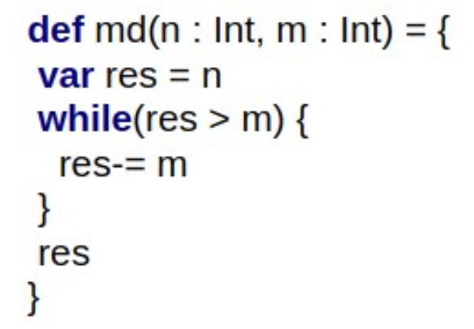
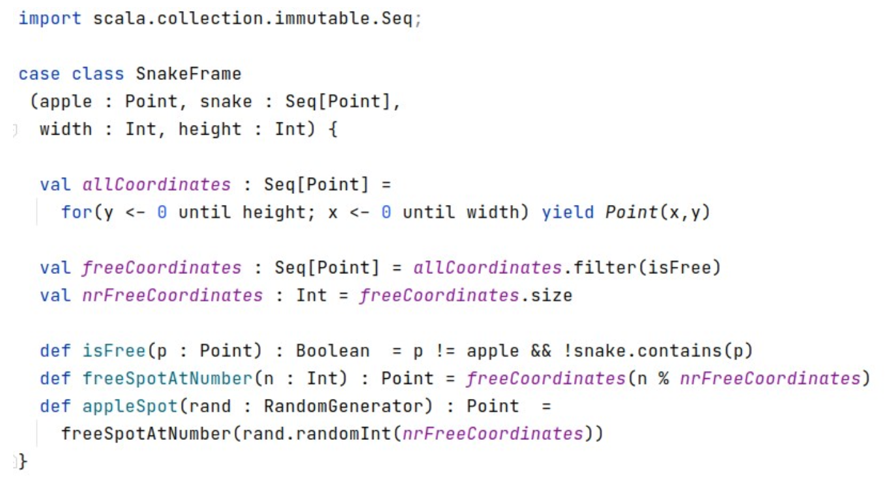

THE NOTES
Is md a pure function?

Yes
Is the above function pure? (a.indices is the same as 0 to a.length)
No, it is impure.
Which of the methods above are pure? Select 0 or more

isFree & freeSpotAtNumber